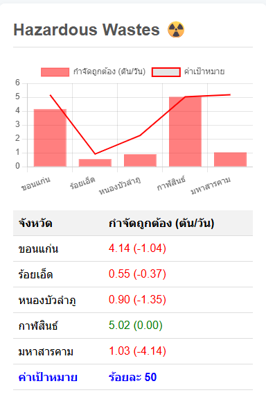

รายงานคุณภาพสิ่งแวดล้อม: การจัดการมูลฝอยที่เป็นพิษหรืออันตราย

ภาพที่ 4: ผลการจัดการของเสียอันตรายของ 5 จังหวัด
บทนำ
รายงานฉบับนี้จัดทำขึ้นเพื่ออภิปรายผลและให้ข้อเสนอแนะสำหรับการจัดการของเสียอันตรายจากชุมชนในพื้นที่ 5 จังหวัดได้แก่ ขอนแก่น ร้อยเอ็ด หนองบัวลำภู กาฬสินธ์ และมหาสารคาม โดยใช้ข้อมูลจากผลการจัดการของเสียอันตรายในแต่ละจังหวัด เทียบกับค่าเป้าหมายที่กำหนดไว้เป็นเกณฑ์ในการประเมิน
การอภิปรายผล
ภาพที่ 4 แสดงผลการจัดการของเสียอันตรายของ 5 จังหวัด โดยมีค่าเป้าหมายที่แต่ละจังหวัดต้องกำจัดได้อย่างถูกต้อง ซึ่งภาพรวมส่วนใหญ่ยังทำได้ต่ำกว่าเป้าหมายที่ตั้งไว้
- กาฬสินธ์ เป็นจังหวัดเดียวที่สามารถจัดการของเสียอันตรายได้อย่างถูกต้องตามเป้าหมายที่กำหนดไว้ โดยมีค่า gap เท่ากับ 0.00
- มหาสารคาม มีช่องว่างจากเป้าหมายมากที่สุด โดยมีการกำจัดถูกต้องเพียง 1.03% และมีค่า gap ติดลบถึง 4.14
- ขอนแก่น สามารถกำจัดได้อย่างถูกต้อง 4.14% แต่ยังคงต่ำกว่าเป้าหมายที่ตั้งไว้เล็กน้อย
- ร้อยเอ็ด และ หนองบัวลำภู มีอัตราการกำจัดถูกต้องต่ำเช่นกัน โดยอยู่ที่ 0.55% และ 0.90% ตามลำดับ
ข้อเสนอแนะเพื่อการจัดการมูลฝอยที่เป็นพิษหรืออันตรายจากชุมชน
เพื่อพัฒนาประสิทธิภาพการจัดการของเสียอันตรายให้ดีขึ้น จึงมีข้อเสนอแนะดังต่อไปนี้:
การเรียนรู้จากจังหวัดกาฬสินธ์
- ควรมีการศึกษาและถอดบทเรียนจากแนวทางปฏิบัติของจังหวัดกาฬสินธ์ ซึ่งเป็นจังหวัดเดียวที่บรรลุเป้าหมาย เพื่อนำมาปรับใช้ในจังหวัดอื่นที่ยังทำได้ไม่ดีนัก
เพิ่มประสิทธิภาพการจัดเก็บและคัดแยก
- ส่งเสริมให้ประชาชนมีความรู้เรื่องการคัดแยกมูลฝอยที่เป็นพิษหรืออันตรายในครัวเรือน เช่น แบตเตอรี่, หลอดไฟ, และสารเคมีต่างๆ พร้อมจัดตั้งจุดรวบรวมที่มีมาตรฐานในแต่ละชุมชน
การพัฒนาโครงสร้างพื้นฐาน
- สำหรับจังหวัดที่มีช่องว่างจากเป้าหมายมากอย่างมหาสารคาม ควรมีการจัดทำแผนปฏิบัติการเฉพาะกิจเพื่อเร่งรัดการจัดการของเสียอันตรายอย่างเร่งด่วน โดยอาจมีการจัดตั้งศูนย์รวบรวมและกำจัดระดับภูมิภาค
สร้างความร่วมมือระหว่างหน่วยงาน
- ประสานงานระหว่างองค์กรปกครองส่วนท้องถิ่น ภาคเอกชน และประชาชน เพื่อให้การจัดการของเสียอันตรายเป็นไปอย่างมีประสิทธิภาพและครอบคลุม
การรณรงค์และให้ความรู้
- จัดกิจกรรมรณรงค์และให้ความรู้เกี่ยวกับอันตรายของของเสียอันตรายต่อสุขภาพและสิ่งแวดล้อม เพื่อกระตุ้นให้ประชาชนมีส่วนร่วมในการจัดการอย่างถูกวิธี